O Borussia Dortmund foi fundado em 1909 e com o tempo foi se tornando um
dos mais bem-sucedidos e mais queridos clubes do futebol alemão. A equipe venceu seu primeiro Campeonato Alemão
em 1956 e desde então conquistou oito títulos da Bundesliga, o último deles em 2012 sob o comando de Jürgen
Klopp. O Borussia conquistou ainda quatro Copas da Alemanha, a última em 2021.
No cenário internacional, a equipe também alcançou triunfos consideráveis. O principal deles aconteceu em 1997,
quando o clube de Dortmund conquistou a taça da Liga dos Campeões da UEFA depois de derrotar a Juventus por 3 a
1 na final. No mesmo ano, o título continental foi complementado pela conquista do Mundial de Clubes derrotando
o Cruzeiro por 2 a 0 na decisão.
O Borussia ficou perto de conquistar o principal torneio continental da Europa outras duas vezes, em 2013 e
2014, mas foi derrotado na final nas duas graças.
Foto do estadio da Borrusia Westfalenstadion
Idade de Ouro: Anos 90
Em 1992, Ottmar Hitzfeld levou o Borussia Dortmund ao segundo lugar na
Bundesliga e teria vencido o título se o Stuttgart não tivesse vencido o seu último jogo para se tornar campeão.
Juntamente com o quarto lugar na Bundesliga, o Dortmund chegou à final da Copa da UEFA de 1993, mas perdeu por 6
a 1 para a Juventus. Apesar desse resultado, o Borussia saiu com um prêmio de 25 milhões pelo sistema de
premiação em dinheiro na época para os times alemães que participavam da Copa. Com esse dinheiro, eles foram
capazes de contratar jogadores que mais tarde trouxeram numerosas honras nos anos 90.
Sob a chefia do Bola de Ouro de 1996, Matthias Sammer, o Borussia Dortmund ganhou títulos da Bundesliga em 1995
e 1996. O Dortmund também venceu a DFL-Supercup contra o Borussia Mönchengladbach em 1995 e o Kaiserslautern em
1996.
Na temporada de 1996-97, a equipe chegou à sua primeira final da Liga dos Campeões. Numa memorável final jogada
no Estádio Olímpico de Munique, o Dortmund enfrentou a Juventus. Dortmund levantou o troféu com uma vitória por
3 a 1 com gols de Lars Ricken e Karl-Heinz Riedle (duas vezes).
Dortmund, em seguida, bateu o Cruzeiro por 2 a 0 na final da Copa Europeia/Sul-Americana de 1997 para se tornar
o campeão do mundo. O Borussia Dortmund foi o segundo clube alemão a vencer a Copa Intercontinental, depois do
Bayern de Munique em 1976.
Século 21 e Borussia "Vai ao Público"
Em outubro de 2000, o Borussia Dortmund tornou-se o primeiro — e até agora o único — clube de capital aberto do
mercado de ações alemão.
Em 2002, o Borussia Dortmund conquistou seu terceiro título da Bundesliga. Eles tiveram uma notável corrida no
final da temporada para ultrapassar o Bayer Leverkusen e garantir o título na última rodada. O treinador
Matthias Sammer tornou-se a primeira pessoa na história do Borussia Dortmund a vencer a Bundesliga como jogador
e treinador. Na mesma temporada, o Borussia perdeu a final da Copa da UEFA de 2001-02 para o Feyenoord.
A sorte de Dortmund, então, declinou de forma constante por vários anos. A má gestão financeira conduziu a uma
pesada carga de dívidas e à venda dos seus terrenos no Westfalenstadion. A situação foi agravada pela
incapacidade de avançar na Liga dos Campeões da UEFA de 2003-04, quando a equipe foi eliminada nos pênaltis para
o Club Brugge.
Em 2003, o Bayern de Munique emprestou 2 milhões de euros ao Dortmund para pagar sua folha de pagamento. O
Borussia foi novamente levado à beira da falência em 2005, o valor original de € 11 de suas ações despencou mais
de 80% na Bolsa de Valores de Frankfurt. A resposta à crise incluiu um corte salarial de 20% para todos os
jogadores. Em 2006, a fim de reduzir a dívida, o Westfalenstadion foi renomeado para "Signal Iduna Park", após
uma companhia de seguros local comprar os direitos.
O Dortmund sofreu um início ruim na temporada de 2005-06, mas conseguiu terminar em sétimo lugar na Bundesliga.
A administração do clube indicou que o clube voltou a mostrar lucro; isto foi em grande parte relacionado com a
venda de David Odonkor para o Real Betis e Tomáš Rosický para o Arsenal.
Na temporada de 2006-07, o Dortmund inesperadamente enfrentou sérios problemas de rebaixamento pela primeira vez
em anos. Eles conseguiram se salvar por apenas um ponto.
Na temporada de 2007-08, o Dortmund perdeu para muitos clubes menores da Bundesliga. Apesar de terminar em 13º
na tabela, o Dortmund chegou à final da DFB-Pokal contra o Bayern de Munique, onde perdeu por 2 a 1 na
prorrogação. A aparição na final qualificou Dortmund para a Copa da UEFA, porque o Bayern já tinha se
classificado para a Liga dos Campeões. Thomas Doll renunciou em 19 de maio de 2008 e foi substituído por Jürgen
Klopp.
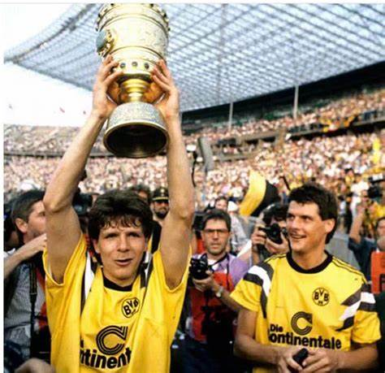
O primeiro título do clube em 23 anos.
Norbert Dickel e Andreas Möller, jogadores do Borussia Dortmund, comemorando a vitória na DFB-Pokal
(Copa da Alemanha) de 1989.
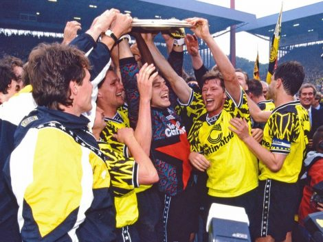
BVB Campeão 95
A imagem retrata a euforia do Borussia Dortmund ao erguer o troféu da Bundesliga em 17 de junho de
1995, marcando seu primeiro título alemão em mais de três décadas, com figuras como Karl-Heinz Riedle
e Andreas Möller na celebração.
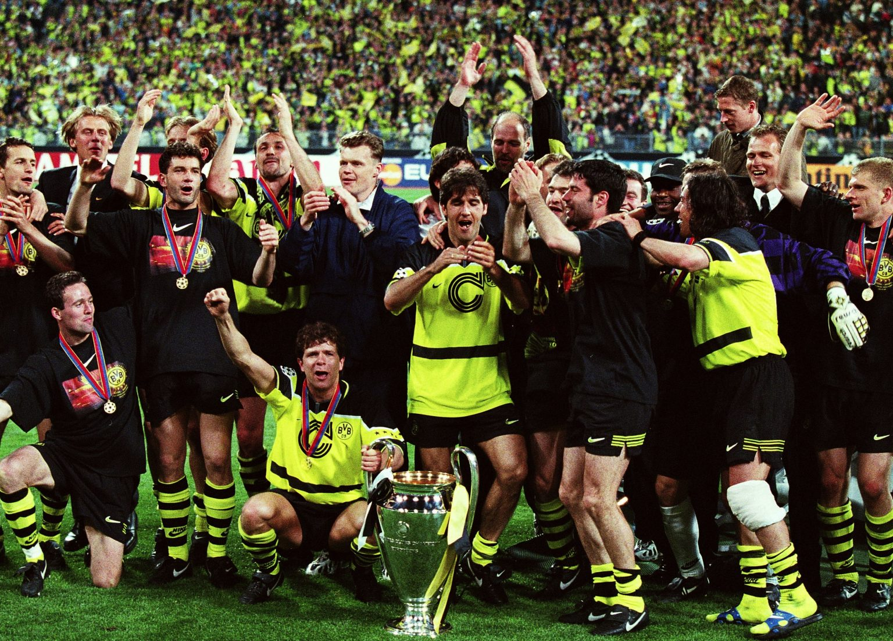
UEFA Champions League
Premiação da Champions de 1997
Como Classificou
O finalista da Liga dos Campeões de 2024 garantiu a sua vaga em março de 2024 através das
classificações do ranking europeu . Quando o Leipzig, seu último concorrente alemão, foi eliminado do torneio
continental, a participação do Borussia estava assegurada.
Juntamente com o clube de Dortmund, o Bayern de Munique - o outro alemão que disputará o Mundial de Clubes -
já houve ganhos na vaga também pelas classificações do ranking.
Elenco
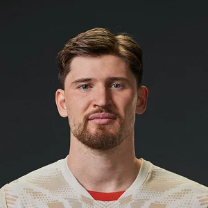
Gregor Kobel #1
Goleiro
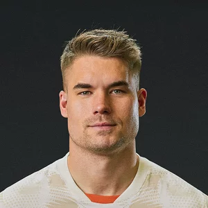
Alexsander Meyer #33
Goleiro
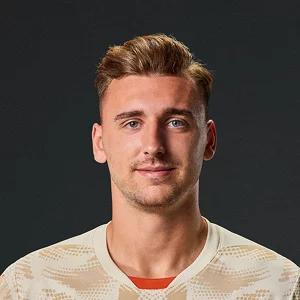
Marcel Lotka #35
Goleiro
Yan Couto #2
Defensor
Waldemar Anton #3
Defensor
Nico Schlotterbeck #4
Defensor
Ramy Bensebaini #5
Defensor
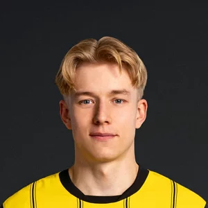
Daniel Svensson #24
Defensor
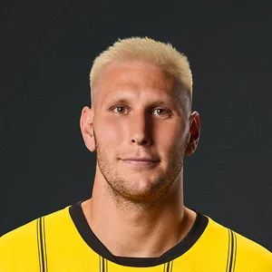
Niklas Süle #25
Defensor
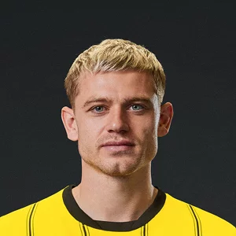
Julian Ryerson #26
Defensor
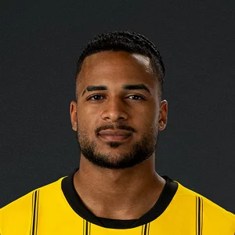
Almugera Kabar #42
Defensor
Salih Özcan #6
Meio-Campo
Giovanni Reyna #7
Meio-Campo
Felix Nmecha #8
Meio-Campo
Julian Brandt #10
Meio-Campo
Pascal Groß #14
Meio-Campo
Carney C. #17
Meio-Campo
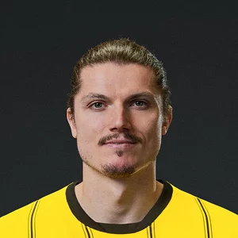
Marcel Sabitzer #20
Meio-Campo
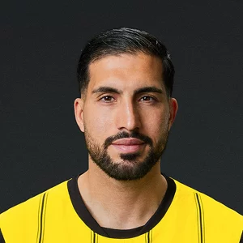
Emre can #23
Meio-Campo
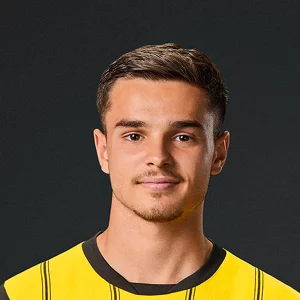
Kjell Weatjen #38
Meio-Campo
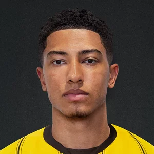
Jobe Bellingham #77
Meio-Campo
Serhou Guirassy #9
Atacante
Maximilian Beier #14
Atacante
Julien Duranville #16
Atacante
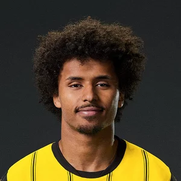
Karin Adeyemi #27
Atacante
Cole Campbell #37
Atacante
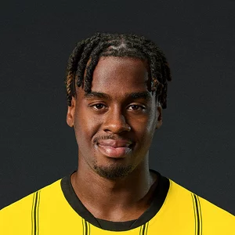
Jamie Gittens #43
Atacante
Títulos
Bundesliga
8 Títulos
1956, 1957, 1963, 1994/95, 1995/96, 2001/02, 2010/11 e 2011/12